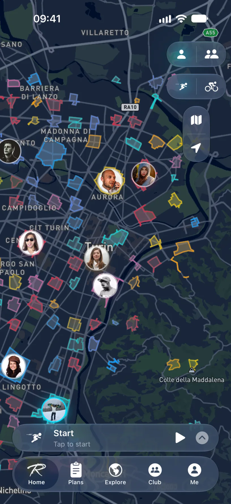

Guide
Updated 25 November 2026
RouteRush is an iOS app that turns running and cycling into territorial conquest — close a loop on a run and the streets inside it become your territory.
Territory running is the idea behind it: the route you record is not only a line on a map, it is a claim on the ground that line encloses.
Other runners can take that ground the same way, so the map of your city keeps changing hands, one closed loop at a time.
You record a run or a ride with GPS, as you would with any tracker. The difference comes when your route closes a loop: everything inside it becomes yours. It is not a circle drawn around your position. The claim takes the actual shape of the streets you covered, drawn on a 3D map of your city.
Take a different route on another day and your territory changes shape to match. Your ground is kept from one run to the next, so a whole neighbourhood is won over months, not in a single outing.

Ground changes hands in one move. If another runner's loop takes in part of your territory, that shared part becomes theirs as soon as their run is saved, and the rest stays yours. The new border follows the route they actually ran, as exact map geometry.
Running past your streets takes nothing away: a rival has to close a loop all the way around the ground to win it. The same rule works in your favour, so the way to win an area back is to close a loop around it yourself.
Nobody wears your claim down. Your territory does not fade with time. The only things that change your map are a rival closing a loop over your ground, or you closing a new one.
Your territory is what you hold today. The Atlas is the record: it keeps every loop you have ever closed, teal for runs and green for rides, including ground a rival has since taken from you. It sits beside the Heatmap, Territory and Routes views in the map modes.
Territory is not only for runners. A ride is recorded with GPS just like a run, and a ride that closes a loop claims ground in the same way. In the Atlas the two keep their own colours, so you can see which ground you took on foot and which by bike.
A run tracker records where you went: distance, pace and a line on a map. RouteRush records all of that too, but there the line is the receipt and the ground is the score. Your distance is scored in Rush Points, a running streak multiplies that score, and ground that was not yours before the run adds more on top. Rush Points then decide your place in a weekly league of up to thirty runners.
RouteRush can read your workouts from Apple Health and write completed ones back, so it sits next to whatever else you already use.
An iPhone with iOS 18 or later. Installing RouteRush and playing it cost nothing, and that covers GPS tracking, territory, leagues, clubs, challenges and all of the training plans. Tracking is built to cope with dropped GPS and no network at all: activities wait on your phone and sync when a connection returns.
No. What matters is that your route closes a loop. The ground inside takes the shape of the streets you actually ran, not a circle drawn around you.
No. Running along your streets is not enough. Another runner has to close a loop that encloses your ground, and only the overlap is cut out of your claim.
No. Territory does not wear away while you rest. Your ground only changes hands when another runner closes a loop over it.
The distance earns Rush Points again, but the ground does not. New ground only earns when it is ground you did not already hold, so the same loop cannot be farmed.
Yes. Seeing who owns any territory on the map is free for everyone, and the territory detail sheet shows the owner, the area and the runs behind it.
Leagues, Rush Points, Boldi the coach and what is free: read the RouteRush FAQ
See the map for yourself — routerushapp.com
Get RouteRush on the App Store — free on iPhone, iOS 18 or later.